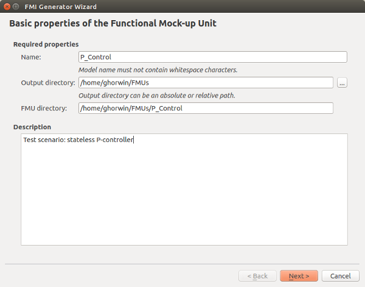
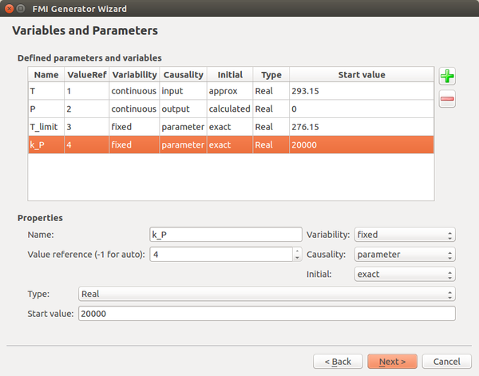
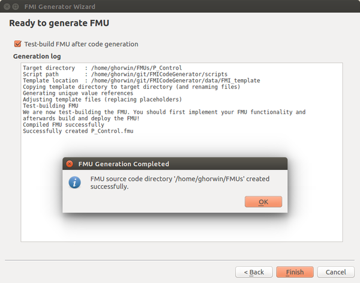

Draft, converted from the old GitHub wiki. The code shown here refers to an older generator version (value reference defines and variable initialization in the user .cpp file) and must be updated.
|
Description
This test case demonstrates/tests the FMICodeGenerator with a very simply P controller. This test also serves as tutorial on the way from the FMICodeGenerator wizard all the way through to the final complete FMU.
Generating the FMU
-
run
scripts/main.pyto start the generator
Basic Properties
-
enter P_Control as model name
-
select target directory, for example
/home/<username>/FMUs -
optionally enter a description

Variables
-
specify the following variables
| Name | Unit | Causality | Variability | Initial value |
|---|---|---|---|---|
T |
K |
input |
continuous |
293.15 (approx) |
P |
W/m3 |
output |
continuous |
0 (calculated) |
T_limit |
K |
parameter |
fixed |
276.15 (exact) |
k_P |
W/m3K |
parameter |
fixed |
20000 (exact) |
T is the sensor temperature, P is the heating power, T_limit is the temperature threshold below which the heating is turned on.

Generate FMU directory and test-build FMU
-
confirm last page of wizard to finish generation

You will notice, that FMIGenerator did also create a file /home/<username>/FMUs/P_Control.input, which is a JSON file holding the input data supplied to the wizard. If you want to run the wizard again, maybe modifying/correcting parameters on the way, the wizard will ask you after entering model name and output path, if the old input data shall be read again.
The directory /home/<username>/FMUs/P_Control was created with the source code file /home/<username>/FMUs/P_Control/src/P_Control.cpp waiting to be completed with the actual FMU functionality.
Implement FMU functionality
To implement the FMU source code, you can use Qt Creator and open the project file /home/<username>/FMUs/P_Control/P_Control.pro. This will also give you a convenient way of compiling/debugging your FMU code.
Alternatively, just open up the file /home/<username>/FMUs/P_Control/src/P_Control.cpp in your favourite text editor.
Automatically generated code
At first you will notice a block of C-defines:
#define FMI_INPUT_T 1
#define FMI_OUTPUT_P 2
#define FMI_PARA_T_limit 3
#define FMI_PARA_k_P 4Every variable defined in the wizard gets its own unique define that can be used in the code instead of native value references.
In the constructor code all the variables are initialized. Normally, you need not change anything here. While the values set here can be modified at will, you must insert the variables to the respective data maps here. std::map will automatically insert values at assignment. Note that parameters are handled (stored) just as regular variables.
// initialize input variables and/or parameters
m_realVar[FMI_INPUT_T] = 293.15;
m_realVar[FMI_PARA_T_limit] = 276.15;
m_realVar[FMI_PARA_k_P] = 20000;
// initialize output variables
m_realVar[FMI_OUTPUT_P] = 0;The actual initialization code (if needed) goes into the function init(). In this test case we do not need anything here.
Implement ModelExchange functionality
The actual P-control code looks like this:
P = k_p * (T_limit - T)
with an additional check that if T >= T_limit the heating is turned off.
The actual control logic is now implemented for ModelExchange, in the function updateIfModified(). The code only gets executed when any of the input variables (including parameters) have changed.
// model exchange: implementation of derivative and output update
void P_Control::updateIfModified() {
if (!m_externalInputVarsModified)
return;
// get input variables
double T = m_realVar[FMI_INPUT_T];
double T_limit = m_realVar[FMI_PARA_T_limit];
double k_P = m_realVar[FMI_PARA_k_P];
// *** own code starts here ***
double P = 0;
if (T < T_limit)
P = k_P*(T_limit - T);
// output variables
m_realVar[FMI_OUTPUT_P] = P;
// *** own code ends here ***
// reset externalInputVarsModified flag
m_externalInputVarsModified = false;
}With that code in place, ModelExchange functionality is already completed. For Co-Simulation the code is effectively the same, since this simple model does not have a time-dependency (no time integration).
We just remove everything from the function integrateTo() and add simply a call to the modelExchange-calculation function.
// Co-simulation: time integration
void P_Control::integrateTo(double tCommunicationIntervalEnd) {
// state of FMU before integration:
// m_currentTimePoint = t_IntervalStart;
// *** own code starts here ***
updateIfModified(); // re-use modelexchange code
// *** own code ends here ***
m_currentTimePoint = tCommunicationIntervalEnd;
// state of FMU after integration:
// m_currentTimePoint = tCommunicationIntervalEnd;
}Building the FMU
If you work with Qt Creator, the modified code can be compiled directly. If everything works, switch to a console window, change into directory
/home/<username>/FMUs/P_Control/build/
and run the script:
./build.sh
or on Windows:
build_VC_x64.bat
The code should compile without any problems - otherwise fix potential typing errors.
Deploying the FMU
Next run the deployment script:
./deploy.sh
or on Windows:
deploy.bat
Now, P_Control.fmu has been created.
Test the FMU with the Compliance Checker
You can now run the FMU through the compliance checker. You can download it from the FMI Tools webpage or extract it from the file third_party/FMUChecker-2.0.4-linux64.zip.
On Linux:
> fmuCheck.linux64 P_Control.fmu[INFO][FMUCHK] FMI compliance checker 2.0.4 [FMILibrary: 2.0.3] build date: Nov 6 2017
[INFO][FMUCHK] Called with following options:
[INFO][FMUCHK] /home/ghorwin/git/FMICodeGenerator/third_party/FMUChecker-2.0.4-linux64/fmuCheck.linux64 P_Control.fmu
[INFO][FMUCHK] Will process FMU P_Control.fmu
[INFO][FMILIB] XML specifies FMI standard version 2.0
[INFO][FMI2XML] Found model identifiers for ModelExchange and CoSimulation
[INFO][FMUCHK] Model name: P_Control
[INFO][FMUCHK] Model GUID: {674ca730-438c-11e9-a167-247703254bb4}
[INFO][FMUCHK] Model version: 1.0.0
[INFO][FMUCHK] FMU kind: ModelExchange and CoSimulation
[INFO][FMUCHK] The FMU contains:
0 constants
2 parameters
0 discrete variables
2 continuous variables
1 inputs
1 outputs
0 local variables
0 independent variables
0 calculated parameters
4 real variables
0 integer variables
0 enumeration variables
0 boolean variables
0 string variables
[INFO][FMUCHK] No input data provided. In case of simulation initial values from FMU will be used.
[INFO][FMUCHK] Printing output file header
"time","P"
[INFO][FMUCHK] Model identifier for ModelExchange: P_Control
[INFO][FMILIB] Loading 'linux64' binary with 'default' platform types
[INFO][FMUCHK] Version returned from ME FMU: '2.0'
[INFO][FMUCHK] Initialized FMU for simulation starting at time 0
0.0000000000000000E+00,0.0000000000000000E+00
2.0000000000000000E-02,0.0000000000000000E+00
4.0000000000000001E-02,0.0000000000000000E+00
.
.
.
9.9999999999998757E+00,0.0000000000000000E+00
1.0000000000000000E+01,0.0000000000000000E+00
[INFO][FMUCHK] Simulation finished successfully at time 10
[INFO][FMUCHK] Model identifier for CoSimulation: P_Control
[INFO][FMILIB] Loading 'linux64' binary with 'default' platform types
[INFO][FMUCHK] Version returned from CS FMU: 2.0
[INFO][FMUCHK] Initialized FMU for simulation starting at time 0
1.0000000000000000E+01,0.0000000000000000E+00
[INFO][FMUCHK] Simulation finished successfully at time 10
FMU check summary:
FMU reported:
0 warning(s) and error(s)
Checker reported:
0 Warning(s)
0 Error(s)
Of course, currently, the actual functionality hasn’t been triggered yet, since input data was not supplied.
So, as a next test, we provide input temperatures and monitor the calculated heating load.
Running the compliance checker with reference input data
We can generate input data using another simulation model. Here, I’ve done a Co-Simulation with another model, monitored the exchanged data and composed a csv file in the format requested by the FMI Compliance checker.
Download the file P_Control_in.csv and copy it into the directory with the fmu. Then run the compliance checker with the following command line (Linux):
> ./fmuCheck.linux64 -i P_Control_in.csv -h 120 -s 864000 -o P_Control_cc.csv P_Control.fmuYou should get an output as in the reference result file P_Control_cc.csv.